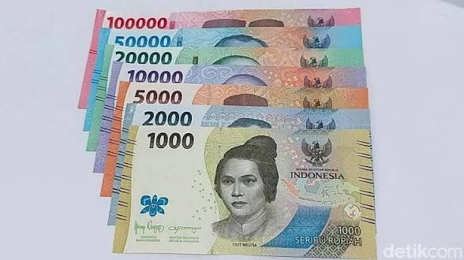

Konektivitas
Surakarta memiliki akses transportasi yang mudah melalui:
Akses Transportasi Menuju Kota Surakarta
Bandara Adi Soemarmo
Stasiun Solo Balapan
Stasiun Purwosari
Terminal Tirtonadi
persyaratan dan kelengkapan
Wisatawan internasional yang berkunjung ke Indonesia wajib memiliki paspor dengan masa berlaku minimal 6 bulan. Beberapa negara memerlukan visa kunjungan wisata sebelum masuk ke Indonesia. Wisatawan domestik tidak memerlukan visa untuk berkunjung ke Surakarta.
Mata uang resmi yang digunakan adalah Rupiah (IDR). Penukaran uang dapat dilakukan di bandara, bank, dan money changer resmi.Pembayaran digital juga tersedia di banyak tempat wisata dan pusat perbelanjaan.

Kota Surakarta dapat diakses melalui berbagai sarana transportasi seperti pesawat melalui Bandara Adi Soemarmo, kereta api melalui Stasiun Solo Balapan dan Stasiun Purwosari, serta bus melalui Terminal Tirtonadi. Transportasi dalam kota juga tersedia seperti Batik Solo Trans, becak, dan ojek online.
Wisatawan dari luar kota dapat menggunakan bus, kereta api, atau kendaraan pribadi. Sedangkan wisatawan dari luar pulau dapat menggunakan pesawat atau kapal laut.
Surakarta memiliki akses transportasi yang mudah melalui:
Bandara Adi Soemarmo
Stasiun Solo Balapan
Stasiun Purwosari
Terminal Tirtonadi

Bus / Bus Tour

Kereta Api

Kendaraan Mobil

Kapal Laut

Pesawat Terbang

Kendaraan Bermotor